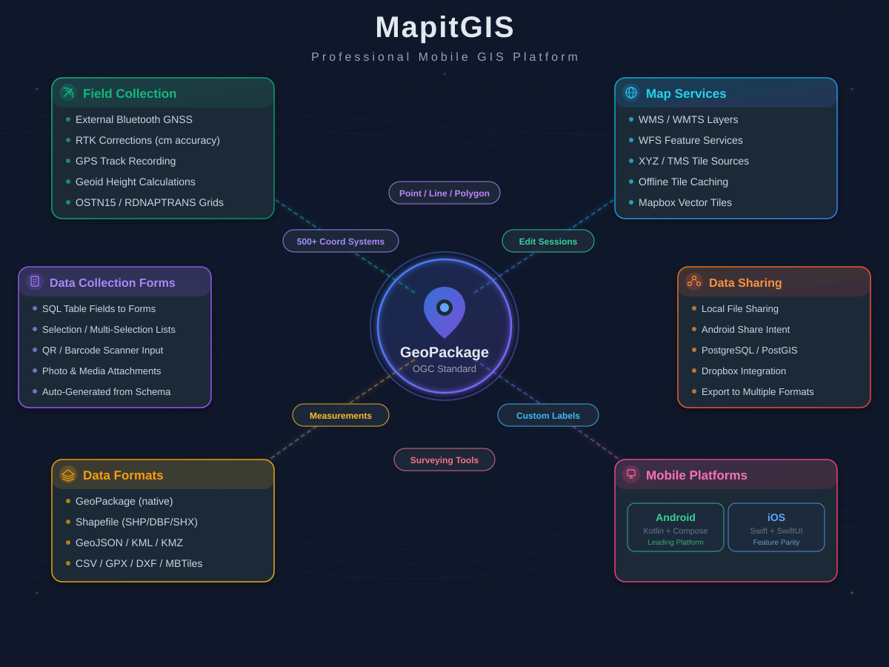

Collect data your way
Capture points, lines, and polygons with GPS or manual placement. Multi-part geometries, position averaging, and real-time GPS tracking - all stored in OGC GeoPackage.
Built for the field
Offline maps, custom attribute forms, and GPS tracking designed for fieldwork. Streamlined workflows that stay out of your way so you can focus on the job.
Professional-grade mapping
Powered by Mapbox for fast, smooth rendering. Connect WMS, WFS, and WMTS services. Load XYZ tiles and MBTiles offline. Handles large datasets without compromise.
Platform overview
A professional mobile GIS platform built around the open GeoPackage standard.

Everything you need in the field
30+ capabilities across data collection, export, mapping services, precision GNSS, and styling - all offline-capable.
Data Collection
Export & Import
Map Services
GNSS & Positioning
Attribute Forms
Styling
What users say
This is an absolutely fabulous app for GIS data collection on a budget. I've been working with GPS for over 2 decades. It's clear that the development of this one has come from the perspective of an actual user and not a marketing department.
Mike Miller
I've been through the other similar apps, and they all miss one or more features. This one is the only app to have them all, and in a simple easy to use format.
Dan Cuillin
I tried about 20 applications and this is the best for data collection in the field. App is intuitive and easy to use. Feature attributes can be quickly selected using the drop-down menu, which speeds up data collection.
Marko Beslic
Years of waiting and testing others, Mapit has turned out to be the most promising app for mobile data collection and GIS integration. It is elaborately designed with a broad vision.
Zeynep Dinçer